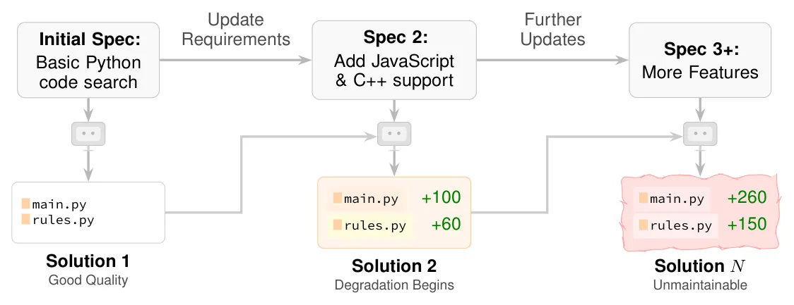
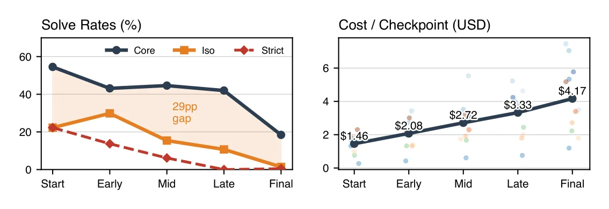
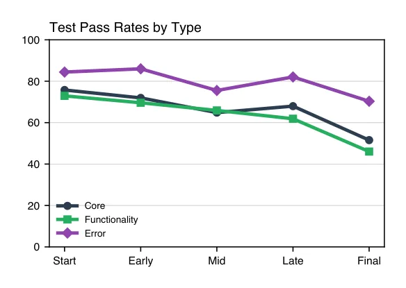
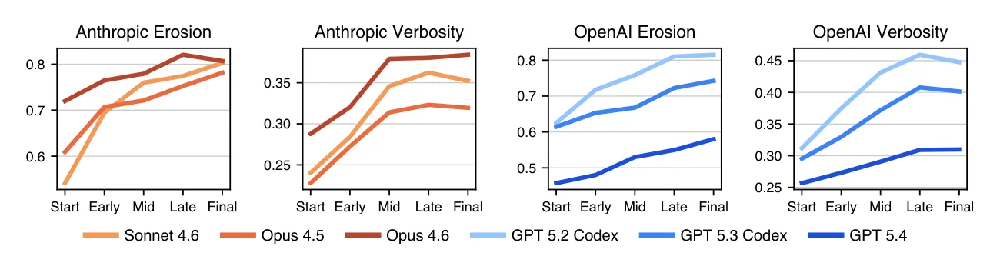
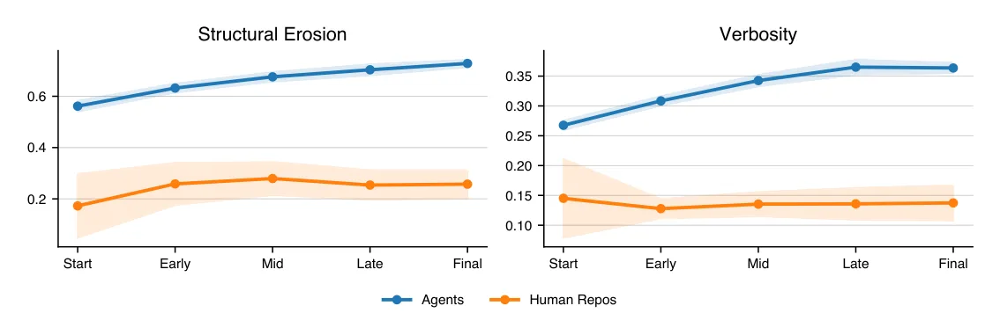
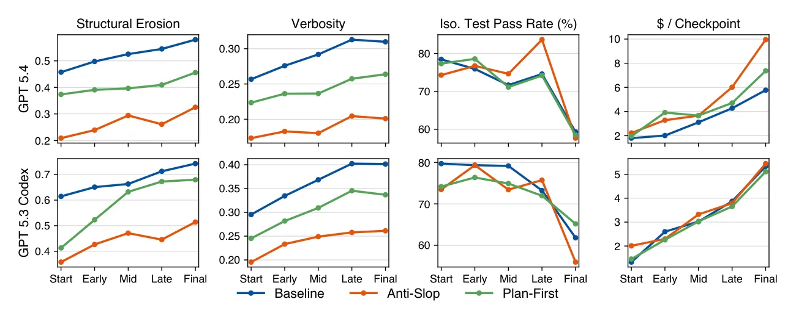

Paper
SlopCodeBench: How Coding Agents Degrade Over Long-Horizon Tasks
In short
Coding benchmarks evaluate one artifact against one specification, which measures whether an agent can write working code but not whether that code survives the next requirement. SlopCodeBench closes the loop: 20 problems, 93 checkpoints, and at every step the agent gets the next specification plus its own previous workspace, with the tests hidden and the internal design left entirely to it.
Across 11 models, no agent solved a single problem end to end — the best per-checkpoint strict rate was 17.2%. Two new metrics track quality at every step: structural erosion (how much of a codebase's complexity is concentrated in already-complex functions) and verbosity (redundant and duplicated lines). Erosion rose in 80% of trajectories and verbosity in 89.8%. Against 48 maintained Python repositories, agent code is 2.2× more verbose — and the gap widens with every iteration while the human repositories stay flat.
Prompts that explicitly demand clean code lower the starting point by about a third and leave the rate of decay untouched, without improving pass rates and while costing up to 48% more.
Contents
- The problem: benchmarks test the first draft, never the second
- How SlopCodeBench works
- Putting a number on “slop”
- Result 1: nobody finishes, and it gets more expensive
- Result 2: quality degrades, and the mechanism is visible
- Result 3: human repositories do not do this
- Result 4: better prompts move the intercept, not the slope
- Why this matters
- Limitations and open questions
- Glossary
- Sources
01The problem: benchmarks test the first draft, never the second
Almost every benchmark for coding agents asks the same question: given a complete specification, can the model produce code that passes a test suite? Real software development almost never looks like that. You write something, it works, and then the requirements change — and the code you wrote the first time either absorbs the change or fights it.
The authors open with an example that anyone who has shipped software will recognise. You build a code search tool on regular expressions. It works. Then someone asks for structural pattern matching — searching for the shape of code rather than its text — and regular expressions cannot express that. The feature is not an addition; it is a rewrite. The cost was not incurred when you were asked for the new feature. It was incurred months earlier, when you chose regexes.
A single-shot benchmark cannot see that cost. It evaluates one artifact against one specification. Whether the code is a clean, extensible design or a 1,000-line function that happens to produce the right output, the score is identical. As the paper puts it, existing benchmarks measure "whether an agent can produce correct code for the current specification, not whether that code remains extensible under future change."
There is reason to think this matters specifically for agents. Prior work has found that language models favour verbose constructions over concise idioms, and that each editing turn tends to preserve and extend the anti-patterns of the turn before it. The colloquial name for the result — high-volume, low-quality code — is slop, and it supplies the benchmark's name.
Why existing "iterative" benchmarks do not close the gap
Several recent benchmarks do move past single-shot evaluation, and the paper's argument is essentially that each of them breaks the causal chain it needs to preserve. The distinction is worth following closely, because it is the paper's main design contribution.
- Some benchmarks decompose a single monolithic solution into dependency-ordered subproblems. The agent works through them in order, but the architecture was fixed in advance by whoever did the decomposing.
- Some supply gold-standard reference code for prior turns. The agent's turn-three input is a clean human implementation, not the thing it actually built at turn two — so it never inherits its own mistakes.
- Some draw tasks from the commit histories of real open-source repositories. These are useful for studying maintenance work, but the agent is editing a codebase humans designed, along an evolution path humans already walked. It never pays for its own early decisions. These also carry contamination risk, since frontier training data plausibly includes both the repositories and their histories.
- Some apply a single modification, so no trajectory ever forms.
The common thread: for compounding to be observable, the agent's own output has to be the input to the next step, with nothing cleaning it up in between.
02How SlopCodeBench works
SlopCodeBench contains 20 problems spanning 93 checkpoints. A problem is an ordered list of checkpoints; each checkpoint pairs a written specification with a hidden test suite. The agent implements the first specification from an empty directory, and from then on each checkpoint hands it the next specification plus its own previous workspace.

Between checkpoints, only the working directory survives. Each checkpoint runs in a fresh Docker container: installed packages, shell history and agent session data are all wiped, and the previous conversation is not replayed. The agent has to re-derive its understanding of the project from the code itself. The authors frame this as simulating "the common development pattern of returning to a project after time away," and it is what forces the code's structure — rather than the agent's memory — to carry the design.
Four design rules
The benchmark's problems all obey four constraints, and each one exists to close a specific leak:
- No prescribed internal interfaces. Specifications fix only the external contract — command-line arguments, or an HTTP API's inputs and outputs. Benchmarks that hand the model a function signature have already made the architectural decision that this benchmark is trying to measure.
- No visible test suite. Agents see specification prose and worked examples, never the tests or their output. This is a sharp break from the dominant paradigm, where fail-to-pass tests are provided. Tests leak architectural hints, and they let an agent converge by trial and error rather than by understanding the spec.
- Black-box and language-agnostic. Problems constrain observable behaviour only, so they could be implemented in any language. Output comparison normalises away inconsequential differences such as key ordering or match sorting, so an agent is not penalised for an arbitrary choice the spec did not pin down.
- Synthetic problems. Because the problems are written for the benchmark rather than lifted from GitHub, there is no training-data contamination to argue about.
The running example
The paper uses one problem, code_search, throughout. It asks for a command-line tool
that searches source files for patterns, in the spirit of ast-grep, across five
checkpoints:
| Checkpoint | What it adds |
|---|---|
| C1 | Python files only; exact-string and regular-expression rules |
| C2 | JavaScript and C++ support |
| C3 | Structure-aware pattern matching with metavariable capture |
| C4 | Selector rules and automatic fix application |
| C5 | Go, Rust and Java support |
The trap is deliberate and it is set at C1. An agent that inlines file discovery and hardcodes
*.py passes every C1 test. It then has to restructure before it can add a second
language at C2, and again at C5. An agent that builds a language-dispatch interface at C1 does not.
Both score 100% at C1.
This is the whole design in miniature. The benchmark is not trying to find tasks agents cannot do. It is trying to build tasks where the score at step one tells you nothing about how much trouble you are in at step five.
How a checkpoint is scored
Tests are grouped into four kinds: core (behaviour the specification explicitly describes or demonstrates), error (failure-mode handling), functionality (hidden tests that check correctness exhaustively), and regression (every test from every earlier checkpoint). Because regression tests accumulate, one mistake at C2 can zero out every later checkpoint even if the later work is fine — so three headline numbers are reported:
- Strict — passes everything, regression tests included.
- Isolated (Iso) — passes this checkpoint's own tests, ignoring regressions.
- Core — passes only the behaviour the specification actually spelled out.
Since problems have between three and eight checkpoints, raw checkpoint numbers are not comparable across problems. Every trajectory is mapped onto five phases — Start, Early, Mid, Late, Final — and all the charts below use that binning.
03Putting a number on “slop”
The interesting part of the paper is not the pass rates. It is the attempt to measure code quality in a way that is computable at every checkpoint, comparable across agents and problems, and not simply a proxy for "more code". Two metrics do that work.
Structural erosion
The failure mode being targeted is specific: agents under iteration tend to patch new logic into functions that already exist rather than distributing it into new, focused ones. Over several checkpoints this produces a small number of enormous functions carrying most of the program's decision-making.
Erosion is defined as the share of a codebase's total "complexity mass" that sits inside high-complexity functions. Each callable gets a mass:
Erosion is a ratio, not a total. A codebase can double in size with no change in
erosion, provided the new complexity is spread across new functions. It rises only when
complexity piles into the places that were already complex — which is precisely the "just add
another elif" failure mode.
Verbosity
The second dimension is code that says little with many lines: copy-paste, redundant scaffolding, intermediate variables that carry no information. It is measured in two parts — a set of 137 hand-written AST-grep rules that flag known-wasteful constructions, plus detection of duplicated (clone) lines.
The examples the paper gives are recognisable: an identity list comprehension where a filter would do, an emptiness check before a loop that would simply not execute, a single-use variable assigned and immediately consumed. Individually trivial; the claim is that they accumulate.
Both metrics are static heuristics, not measurements of maintainability. Cyclomatic complexity is a decades-old proxy with well-known limitations, and the 137 AST-grep rules encode a particular view of what wasteful Python looks like. The authors report a sensitivity analysis — varying the complexity cutoff across 8, 10 and 12, and the size term across none, √SLOC and linear SLOC — and find the conclusions stable across all nine variants. That tests robustness to the parameters, not whether the metric captures what a maintainer would call quality.
04Result 1: nobody finishes, and it gets more expensive
Eleven models were evaluated across 25 configurations, each through its provider's own CLI harness
— Claude Code for Anthropic models and GLM 4.7, Codex CLI for OpenAI models — rather than a
research agent framework. The reasoning was that frontier models are trained for their native
harness, and that this is how developers actually use them. Each checkpoint got a two-hour wall-clock
limit, no cap on turns or spending, and a minimal prompt that asked only for a working entry point
and an up-to-date requirements.txt.
The headline result is blunt: no agent solved a single problem end to end. Not one of 25 configurations passed every test at every checkpoint of any of the 20 problems. The best per-checkpoint strict solve rate was 17.2%, from Opus 4.6. Isolated solve rates ranged from 7.5% to 23.7%, core rates from 19.4% to 53.8%.

Three things are worth separating here.
The core-versus-isolated gap widens dramatically. At the first checkpoint agents pass the full suite almost as often as they pass the demonstrated-behaviour subset. By the last, they are 13.3× more likely to pass core tests than the complete set. The agents keep satisfying the letter of each specification while increasingly failing everything the specification implied but did not spell out.
Strict solve rates collapse to 0.5% by the final checkpoint. Since strict scoring includes every earlier checkpoint's tests, this is largely regression damage — new features breaking old ones.
Cost grows 2.9× across the trajectory, from a mean of $1.46 per checkpoint at the start to $4.17 at the end, and buys no additional correctness. The agent is working harder against its own accumulated code.

The body text states that "error-handling tests account for most of the decline while core and functionality pass rates remain comparatively stable," and Figure 6's own caption says that "core and functionality tests remain high across checkpoints while error-handling pass rates decline." As plotted, the error line is the highest of the three throughout and falls by roughly 14 points, while core falls about 25 and functionality about 27. On the figure as drawn, core and functionality degrade more than error handling does, not less. This looks like a wording error rather than a data problem — the surrounding argument does not depend on it — but a reader should not take the sentence at face value against the chart. This is a v1 preprint.
05Result 2: quality degrades, and the mechanism is visible
The central question is whether quality actually deteriorates along a trajectory. It does. Erosion rises in 80% of trajectories and verbosity in 89.8%.

The mechanism is not simply that there is more code. It is concentration. Across trajectories the mean number of high-complexity functions rises from 4.1 to 37.0, and the mean maximum cyclomatic complexity in a codebase rises from 27.1 to 68.2. Programs are not just growing; their decision-making is collapsing into a handful of places.
For verbosity, structural duplication does most of the work — up 66%, across 72.1% of trajectories — while the density of AST-grep rule violations grows a more modest 15.6%. In other words, agents are not becoming dramatically worse line by line. They are copying and pasting.
What this looks like in one function
The paper's most memorable illustration comes from the circuit_eval problem. Over
eight checkpoints, Opus 4.6's main() grew from 84 lines to 1,099 lines,
and its cyclomatic complexity from 29 to 285 — a tenfold increase. By the final
checkpoint it was a single dispatcher containing nine command branches, each repeating the same
argument-parsing scaffold rather than sharing it:
def main(): # 1,099 lines, CC = 285
# global flags, --format, --seed (127 lines of
# while-loop arg extraction boilerplate)
command = args[0]
if command == 'check': # 31 lines
elif command == 'eval': # 141 lines
elif command == 'stats': # 31 lines
elif command == 'lint': # 47 lines
elif command == 'dot': # 66 lines
elif command == 'cone': # 88 lines
elif command == 'truth-table': # 141 lines
elif command == 'equiv': # 117 lines
elif command == 'opt': # 312 lines, 13 flags, same pattern repeated
else: ... # 6 linesEvery one of those branches was added by an agent that had just read this function and decided the
cheapest way to add a feature was one more elif. That is exactly what the erosion metric
is built to detect, and it is a decision that no test suite penalises.
Early decisions really do compound
The code_search problem provides the cleanest evidence that step-one choices
determine step-five outcomes. All seven configurations scored 100% at both C1 and C2 — but their
implementations already differed, some building extensible dispatch and others hardcoding the
initial rule kinds. At C3, when structure-aware metavariable patterns arrived, the field split into
three tiers: Opus 4.6 held 90.9%, four configurations clustered at 81.8–88.6%, and GPT 5.2 Codex and
GPT 5.3 Spark collapsed to 52.3%, failing every core test. By C5 that bottom tier's failures had
grown from 21 to 40.
Two more cases point the same way. On eve_industry, Opus 4.6 spent more than double
any other configuration at C2 to get exact fractional arithmetic right, then posted three
consecutive perfect checkpoints and led at C6. On dag_execution, a modular package
structure at C1 absorbed four subsequent checkpoints without rework and finished 12 points ahead of
the runner-up.
Identical scores at checkpoint one, radically different outcomes by checkpoint five. That is the gap between what pass-rate benchmarks measure and what determines whether software survives contact with changing requirements.
06Result 3: human repositories do not do this
Rising numbers only mean something against a reference. The authors assembled a panel of 48 maintained open-source Python repositories, grouped by GitHub stars, and for 20 of them sampled up to 30 commits from the source-touching history — producing 568 temporal checkpoints of human code evolution.
| Group | n | Violation % | Clone ratio | Verbosity | Erosion |
|---|---|---|---|---|---|
| Niche (< 1k stars) | 8 | 0.17 ± 0.13 | 0.05 ± 0.02 | 0.18 ± 0.11 | 0.39 ± 0.30 |
| Established (1k–10k) | 12 | 0.10 ± 0.07 | 0.06 ± 0.03 | 0.13 ± 0.06 | 0.26 ± 0.13 |
| Major (> 10k) | 28 | 0.10 ± 0.04 | 0.07 ± 0.04 | 0.14 ± 0.03 | 0.31 ± 0.12 |
| Human panel (all) | 48 | 0.11 ± 0.07 | 0.06 ± 0.03 | 0.15 ± 0.06 | 0.31 ± 0.17 |
| Agent checkpoints | 990 | 0.32 ± 0.11 | 0.08 ± 0.07 | 0.33 ± 0.10 | 0.68 ± 0.20 |
Agent code is 2.2× more verbose than the human panel and concentrates roughly twice the share of its complexity in high-complexity functions. Only one of the 48 repositories exceeds the agent mean for verbosity. For scale: scikit-learn (0.411) and scipy (0.457) sit at the top of the human erosion range and are still well below the agent average of 0.68.
Note that the verbosity gap is driven almost entirely by the AST-grep violation component — 0.32 for agents versus 0.11 for humans — rather than by clone ratio, where the two are close (0.08 versus 0.06). Agents write more wasteful constructions; they are not overwhelmingly more duplicative at snapshot level.

The direction of travel separates the two populations more cleanly than the absolute levels do. Only 67% of human repositories end more verbose than they started, with a median first-to-last growth of 25%, against 43% for agents. For erosion, 55% of human repositories rise, against 79% of agent trajectories. Maintained software does get worse sometimes — it just does so less often and by less.
This is explicitly not a matched baseline. The repositories differ from the benchmark problems in task, age, team size and development process — they have code review, issue trackers, refactoring sprints and contributors who will be maintaining the thing next year. The comparison answers a narrow question ("does the drift in agent trajectories resemble how maintained software evolves?") and cannot answer the more interesting one ("would a human solving these 20 problems do better?"). Worth holding onto when the 2.2× figure gets quoted without it.
The authors did check one obvious confound: since the temporal panel spans 2005 to 2026, recent commits might themselves be LLM-assisted. Pre-ChatGPT checkpoints have a median verbosity of 0.134 against 0.148 after, so the human baseline does not appear to be contaminated in a way that would matter.
07Result 4: better prompts move the intercept, not the slope
The obvious response to all of this is that the agents were told to "implement a program that 100% solves the specification" and nothing else. Ask for good code and you might get it. The authors tested exactly that, with two alternative prompts:
- anti_slop — an explicit list of prohibitions: no god functions, no abnormal defensive checks, no casts to dodge type checking, no single-use variables, no trivial wrappers, no heavy nesting, no if/else ladders, no comment spam.
- plan_first — plan before coding, write the simple solution, make it correct, then refactor for quality.
The prompts work, in the narrow sense. anti_slop cut initial verbosity by 34.5% on
GPT 5.4 and 33.2% on GPT 5.3 Codex, and lowered initial erosion on both. On GPT 5.4 it reduced
verbosity in 19 of 20 problems and erosion in all 20.

And then the degradation resumes at the same rate. The per-checkpoint erosion and verbosity slopes do not differ significantly between prompt strategies on either model. The lines in Figure 5 are displaced downward and otherwise parallel.
Two further findings sharpen this into something uncomfortable:
Correctness does not improve. Paired Wilcoxon signed-rank tests on per-problem trajectory means find no significant difference in any pass-rate subtype on either model — isolated (p = 0.931 and 0.102), functionality (p = 0.795 and 0.088), error (p = 0.144 and 0.050) and regression (p = 0.609 and 0.309). Halving erosion and cutting verbosity by a third left every pass-rate measure statistically unchanged.
Clean code cost more. GPT 5.4 spent 47.9% more per run under anti_slop
($450 against $304) and 29.2% more under plan_first ($393). On the
dynamic_buffer problem, anti_slop spent $99 against a baseline $35 while
its pass rate fell from 37.2% to 27.1%. GPT 5.3 Codex saw no cost increase but lost 3.4
percentage points of isolated pass rate under anti_slop and 2.2 under
plan_first.
"No significant difference" across eight tests on two models is not proof that quality prompting is useless — the sample is 20 problems per configuration, and two of the eight p-values (0.050 and 0.088) hint at effects a larger study might resolve. The defensible claim is narrower and still interesting: the degradation rate was unmoved by prompting, and whatever the quality gains bought, it was not measurable correctness.
08Why this matters
The practical claim is that pass rates and code quality have come apart, and that we have been measuring only the first. An agent can post a respectable score on every checkpoint of a task while leaving behind a codebase that a person then has to live in. Test suites cannot see structural decay, so a benchmark built on test suites cannot either.
There is a sharper version of this in the appendix that deserves more attention than it gets. In the erosion sensitivity analysis, the authors report that across all nine metric variants, the correlation between erosion and the next checkpoint's pass rate stays near zero — while the correlation with the next checkpoint's cost stays positive. Eroded code does not straightforwardly cause the agent to fail next time. It causes the agent to spend more.
That is a more interesting finding than "quality is bad," and it cuts in an awkward direction. It means erosion is not a leading indicator of correctness that you could optimise pass rates by attacking. It behaves like what it is named after: technical debt. You keep paying interest, and the work still gets done, until at some point a person has to read it.
For anyone building with these tools, the concrete implications are narrow but real:
- A green test suite after an agent's edit tells you the feature works. It tells you nothing about what the next feature will cost.
- The first checkpoint matters disproportionately. Every trajectory where an agent pulled ahead did so because of a structural decision made before there was any pressure to make it well.
- Asking for clean code in the prompt improves the starting point and does not change the trajectory. If you want structural discipline to hold across a project, prompting is not the lever.
The paper's closing position is that the open question is no longer whether degradation happens but whether it can be stopped rather than merely delayed — through training, or through tooling that enforces structure across checkpoints rather than within one. Both remain untested here.
09Limitations and open questions
Some of these the authors state plainly; others are worth adding.
The metrics are proxies, and they are Python-shaped. Erosion is built on cyclomatic complexity, a 1976 measure with a long critical literature; verbosity rests on 137 hand-written rules encoding a particular view of wasteful Python. The nine-variant sensitivity analysis shows the conclusions do not hinge on the exact threshold or size term, which is a real check — but it tests parameter robustness, not construct validity. Nobody has shown that a codebase scoring 0.68 on this erosion metric is harder for a human to maintain than one scoring 0.31.
Only Python was evaluated. The benchmark is language-agnostic by construction, which is one of its better design choices, but cost constraints meant only the Python track was run. Whether the same degradation appears in a strongly typed language with a compiler pushing back on sprawl is untested and genuinely uncertain.
The human panel is a reference, not a control. Covered above, and it is the limitation most likely to be dropped when this result gets summarised.
Everything is measured through one harness version per model. The authors report sensitivity across harness versions where multiple were available and find aggregate metrics vary by under five percentage points — but note that individual problems vary considerably more, which is consistent with their own thesis about compounding. A single trajectory is a noisy object.
Twenty problems is not many. With 20 problems per configuration, the prompt-intervention statistics in particular are working with limited power, and the paper is appropriately careful to describe those results as an absence of detected difference rather than proof of no effect.
Nothing here diagnoses the cause. The paper establishes the phenomenon convincingly. Whether agents degrade code because of training incentives, context limits, the absence of a refactoring step in the harness loop, or something about how they read existing code — none of that is answered, and the fix depends entirely on which it is.
The models are a moving target. This is a v1 preprint from March 2026 evaluating model and harness versions available at that time. The specific numbers are a snapshot; the design of the benchmark is the durable contribution.
10Glossary
- Checkpoint
- One step of a problem: a written specification plus a hidden test suite. The agent's input is the specification and its own workspace from the previous checkpoint.
- Trajectory
- The full sequence of workspaces an agent produces for one problem, from the first checkpoint to the last. The unit over which degradation is measured.
- Cyclomatic complexity (CC)
- A count of the independent paths through a function, introduced by McCabe in 1976. In practice
it counts branch points: each
if, loop or boolean operator adds one. A function with CC = 285 has an enormous number of distinct ways to execute. - SLOC
- Source lines of code — lines excluding blanks and comments.
- Complexity mass
- This paper's per-function weight: CC × √SLOC. Used so that erosion reflects both how branched a function is and, to a lesser degree, how large.
- Structural erosion
- The share of a codebase's total complexity mass held by functions with CC above 10. High erosion means complexity is concentrated in a few large functions rather than distributed.
- Verbosity
- The fraction of lines that are either flagged by one of 137 wasteful-pattern rules or are duplicates of other lines.
- Strict / Isolated / Core
- Three ways of scoring a checkpoint. Strict requires every test including regressions from earlier checkpoints; Isolated drops the regression tests; Core counts only behaviour the specification explicitly described.
- Regression test
- A test carried forward from an earlier checkpoint, so that breaking old behaviour to add new behaviour is penalised.
- Fail-to-pass tests
- The convention used by SWE-bench and its successors, where the agent is shown the tests that must go from failing to passing. SlopCodeBench deliberately withholds these, since they leak information about the intended structure.
- AST-grep
- A tool for matching patterns against a program's abstract syntax tree — the structural
representation of code — rather than against its text. Used here to write the 137 rules that
detect wasteful constructions, and also the inspiration for the benchmark's
code_searchproblem. - Slop
- Informal term for high-volume, low-quality generated output. Here: code that works and that nobody wants to inherit.
11Sources
- Gabriel Orlanski, Devjeet Roy, Alexander Yun, Changho Shin, Alex Gu, Albert Ge, Dyah Adila, Frederic Sala and Aws Albarghouthi. SlopCodeBench: Benchmarking How Coding Agents Degrade Over Long-Horizon Iterative Tasks. arXiv preprint arXiv:2603.24755v1, March 2026. University of Wisconsin–Madison, Washington State University and MIT. arxiv.org/abs/2603.24755
- The benchmark, data and code, per the paper: scbench.ai
- Thomas J. McCabe. A Complexity Measure. IEEE Transactions on Software Engineering, SE-2(4):308–320, 1976. The origin of cyclomatic complexity.
- Carlos E. Jimenez, John Yang, Alexander Wettig, Shunyu Yao, Kexin Pei, Ofir Press and Karthik Narasimhan. SWE-bench: Can Language Models Resolve Real-World GitHub Issues? ICLR, 2024. The single-shot paradigm this paper is arguing against.
- Ward Cunningham. The WyCash Portfolio Management System. OOPSLA, 1992. The original statement of technical debt.